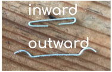

UX DESIGN | UC SAN DIEGO | NOVEMBER 2018 TO DECEMBER 2018
Background
Tasked with redesigning an everyday thing (inspired by Don Norman), my team and I chose to focus on the stapler.
The stapler is an everyday object that...
HASN’T BEEN REDESIGNED FOR OVER 50 YEARS!
A potential safety hazard in offices (Albert Einstein College of Medicine)
Lifespan: 15.6 days of daily use (Middle Tennessee State University)
Broken staplers due to jamming (Middle Tennessee State University)
Problem Statement
People who frequently use staplers for their job or school need a safe and reliable device to depend on so they don’t have to waste time when using a stapler and can instead focus on their work.
Needfinding
We made a mind map to brainstorm different aspects of the product and develop an integrated stream of conscious on paper
Design Map examing who, why, where, price, and safety aspects of staplers.We interviewed at various locations around our school campus and our respective neighborhoods to avoid biases. We asked participants a series of pre-interview questions to see what their experience has been like with staplers in the past. We then asked them to perform an activity using the stapler which involved 5 different tasks.
Tasks:
Open the entire stapler (turn stapler head backwards) & close it.
Open the reload chamber/staples-holder.
Refill staples: put new staples in and then take them out.
Try to staple 15 sheets of paper.
Change the mode of the stapler so that the staples are going outward rather than inward.
User Needs We Identified:
1. Low Discoverability with Outward Staples

Outcomes of the different modes of the Stapler.
There are two settings on the base plate for the direction in which the staple bends: inward and outward. According to stapler makers, that little-used groove is for the sniveling hordes who lack the decisiveness of your circle of friends. When your pals hook together a wad of papers, they mean business. They use the channel that double-bends the staple and clenches the points toward the middle and back into the wad itself. The other setting, the one that splays the staple points outward, is for temporarily attaching papers that are intended to be separated again. The attachment is looser, and it's easier to remove the staple without chewing up the corners of the pages.
Users were unaware of this setting
An interviewee looking around to find buttons, who eventually gives up.
2. Difficulty in Opening Stapler Head
Users were using force to open the Stapler & accidentally opening the reloading chamber
An interviewee using force to open the stapler head.
3. Reloading Stapler with staples
Users did not have enough space for their fingers to take staplers out of the chamber
4. Safety and Jamming
Users encountered jams and have been hurt when using staplers in the past
When participants in our interviews could not perform the tasks we gave them, they reacted negatively from our observations. Thus, from our research it was clear that users of the stapler needed a redesign.
Breakdown of negative reactions observed in our interviews.
Competitive Analysis
While coming up with ideas on how to tackle the redesigning of the stapler, we sat down together as a group and discussed qualities of staplers we think are most important to examine, as well as which staplers we should look at. We used four main criteria to examine popular staplers in the competitive market:
Discoverability; how easy it was to find signifiers and affordances.
Safety; how easy it would be to jam or break the product, as well as hurt oneself while using it
User experience; measures how easily users can use and perform tasks with the product, not feeling ‘useless’ or ‘incompetent’ and or having the stapler jammed
Lifespan; how long it is kept usable and functionable if used roughly everyday
Product
Safety (1-5)
Ease of Discoverability (1-5)
User Experience (1-5)
Lifespan (1-5)
Swingline Stapler 747
2
2.5
2
2
Swingline Small Stapler
4
1
1
1
Kangaro Stapler
1
1
1
3
From our competitive audit we learned:
Staplers on the market are dangerous and unsafe to use, which can be attributed to the large size and metal material of the stapler
Lifespan of a product depends on the material it is made of, as different materials tend to remain held together for longer
Looking at those the mini stapler and the Swingline stapler, who both exhibit lower discoverability and poor safety, we realized our redesign cannot be too large or heavy (with more potential for harm) or too small or light (with more potential for low discoverability).
Low-Fidelity Prototypes
After analyzing the different trends and extrapolating problems from our data, we yielded a number of different ideas to implement in our prototypes.
First Iteration:
This design has two heads, one for the inward staples and the other for the outward.
Key Insights:
Distance from the rotational axis to where the force is applied on the stapler head is smaller than the traditional stapler’s, so people will need to put more force on the stapler for the same amount of papers they would in a traditional stapler
Thus, users will have to push harder than they would with a traditional stapler, which can be dangerous and cause more jamming.
To keep the concept of the double head we would have to make each head the same length as the current stapler. This would yield a very long stapler, meaning it would…
Take up too much space on a desk or a drawer
Be less attractive in the eye of the consumer aesthetically and practically
Be less portable
Thus, we decided to try another redesign we had brainstormed.
Second Iteration:
Focused and improved upon the design of the traditional-looking stapler. We added several buttons indicating where to press to activate different functions
Key Insights:
A button to open the stapler head
to tackle on of the biggest problems we found in our interviews
Conveniently located on both sides of the stapler at the rotational axis, to help users see where to press regardless of their location
To put the stapler head back in its original position, the user simply needs to push it down.
A button to pop up the stapler plate
Assigning a button to this functionality to increase discoverability of this feature
An icon to indicate how to rotate the stapler plate to change from inward to outward mode
To ensure users understand that to change the mode they need to rotate the plate, we added a red arrow that draws a circle signifying to users a rotation needs to occur to enable the function.
In this iteration we increased discoverability, but had not addressed the issues of safety. Thus, we decided to continue iterating on our prototype.
Third Iteration:
Prototype 3 focused on safety and improving upon previous ideas.
Key Insights:
Added a button to open the reloading chamber
To further help users understand how to activate the function of reloading
Decrease the space between the stapler head and metal plate
To reduce the possibility of users putting their fingers in or jamming the product, therefore increasing safety.
Decided to change the space to 3.00mm, which can hold around 20 sheets of paper. Physically restricting users from stapling more than 20 sheets of paper to prevent stapler jams.
3.00mm is a very small space, making it physically impossible for users to place their finger in between and hurt themselves
High-Fidelity Prototypes
To better visualize our redesign, we used Fusion 360 to create a 3D rendering of our third prototype:
We made one change to our prototype. From our interviews we identified that users faced difficulty putting in staples because the space inside the chamber is too small. Thus, we increased the size of the staple chamber to allow for more space to place staples in.
Final Product
Based on our initial user research and iterations, we completed a redesign of the everyday stapler.
Similar to any other design, our new redesign also brings about new tradeoffs. Because we decided to increase the reloading chamber space, new kinds of staples would be needed, as the current staples are too small and would not fit. However, we thought this change is necessary and worth the expenditure as looking for more space in the reloading chamber or having difficulty putting staples was a common user problem.
Another potential tradeoff of the redesign is platform consistency and familiarity, as it is a new-looking stapler with colors and symbols never seen before. So, while we improved discoverability and safety, users may need time to adjust to this new design, as they are used to traditional staplers. But, again, most users were unaware of hidden affordances and functions of traditional staplers. Therefore, we believe this change is important and will eventually contribute to a better experience and lifespan of the product.
Reflections
This project was my first introduction into the world of design. I learned a great deal about user research and human-centered design concepts. The journey of this project was by no means perfect, and I would definitely have stressed the need for more user testing.
In conclusion, if I were to continue working on this project I would:
Further test & refine redesign
Research the utility and value of the inwards & outwards staple function
Research different types of materials for body of the stapler, alleviating its weight burden